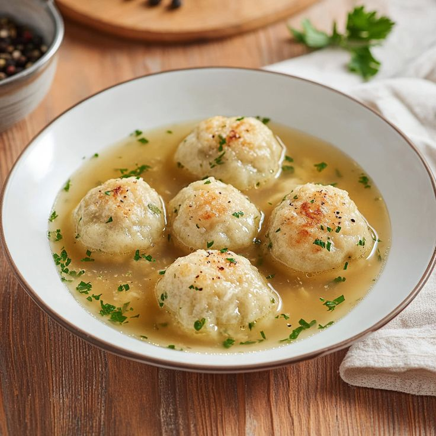
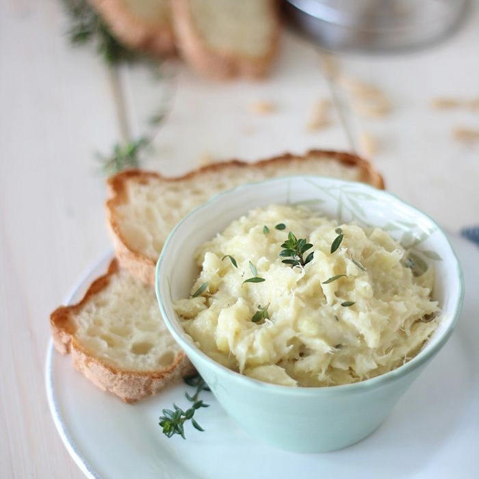

Ricette Salate
In questa sezione troverai tutte le ricette salate tipiche delle regioni italiane, dai piatti di pasta alle pizze, ideali per pranzi e cene gustose.

Trentino Alto Adige -I Canederli-
Ingredienti:
-Pane raffermo 250 g
-Speck 150 g
-Cipolle bianche 50 g
-Uova (medie) 2
-Latte intero 250 g
-Burro 10 g
-Pepe nero q.b.
-Prezzemolo q.b.
-Erba cipollina q.b.
Preparazione:
Per preparare i canederli alla tirolese, preparate il brodo di carne da tenere in caldo. Poi mondate e tritate finemente la cipolla. Tagliate a pezzi molto piccoli lo speck, crica 2-3 mm.
In una padella fate sciogliere il burro a fuoco dolce, quindi versate cipolla e lo speck. Fate rosolare per 5 minuti mescolando spesso. Poi spegnete il fuoco e tenete da parte. Tritate l'erba cipollina e il ciuffo di prezzemolo, quindi tagliate il pane raffermo a dadini di circa 0,5 cm.
Versate in una ciotola il pane e aggiungete il latte (iniziate mettendone 200 g e in caso aggiungetene se l'impasto risultasse eccessivamente asciutto e poco malleabile), unite anche le uova, l'erba cipollina e il prezzemolo tritati.
Proseguite unendo speck e cipolla oramai intiepiditi e iniziate a mescolare per amalgamare il tutto. Se l'impasto risultasse troppo asciutto, aggiungete ancora del latte. Se invece dovesse risultare troppo appiccicoso o molle, potete unire pochissima farina al composto. Una volta pronto inumiditevi leggermente le mani con acqua fredda e formate i canederli roteando l'impasto tra le mani. I canederli dovranno avere un diametro di 5 cm.
Posizionateli su un vassoio man a mano che li formate. Ne verranno circa 10 con queste dosi. Una volta pronti potete cuocerli nel brodo di carne bollente. Basteranno 15 minuti di cottura con un bollore moderato. Servite i canederli alla tirolese ben caldi.

Veneto -Il Baccalà-
Ingredienti:
-Stoccafisso (già ammollato) 800 g
-Olio di semi di girasole 500 g
-Alloro 2 foglie
-Sale fino q.b.
-Pepe nero q.b.
-Per guarnire
-Prezzemolo q.b.
-Pepe nero q.b.
Preparazione:
Per prearare il baccalà mantecato alla veneziata vi servirà lo stoccafisso (noi lo abbiamo preso già ammollato), sciacquatelo comunque più volte sotto acqua corrente fredda ed eliminate le lische estraendole con una pinzetta. Questo passaggio risulta più semplice con lo stoccafisso crudo. Tagliate lo stoccafisso a pezzi grandi, ponetelo in un tegame alto, preferibilmente in acciaio.
Aggiungete l'alloro e versate acqua fredda fino a coprirlo. Dal momento in cui bolle, calcolate altri 30 minuti di cottura. Durante la cottura, togliete la schiuma. Quando il baccalà inizierà a sfaldarsi sarà ora di scolarlo. Trasferitelo nella ciotola della planetaria, montate la frusta e azionate a velocità medio-bassa.
Versate a filo l’olio di semi mentre la planetaria è in azione, poi aggiungete sale e pepe macinato a piacere. Dopodiché aumentate la velocità e continuate a lavorare il composto fino ad ottenere una crema. Ci vorranno circa 10 minuti in tutto in planetaria. Formate le quenelle aiutandovi con 2 cucchiai.
Adagiate le quenelle su crostini di pane tostato oppure su crostini di polenta. Insaporite con prezzemolo fresco tritato e ancora pepe macinato a piacere. Il baccalà mantecato alla veneziana è pronto per essere gustato!